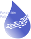

Fundación para la Conservación de los Recursos Hídricos y su Biodiversidad
Una organización que realiza, promueve y difunde actividades relacionadas con el conocimiento e importancia de los recursos naturales para el mantenimiento de la vida en el planeta. Un espacio para generar conciencia y cambios de actitud en la población humana y una ventana para mostrar los proyectos y emprendimientos ambientales que generan cambios.
Usamos la ciencia y el desarrollo tecnológico como herramientas fundamentales para entender nuestro planeta hoy.
Queremos ser parte activa frente a los retos que implica conservar la naturaleza en un mundo cambiante.
Conservar, preservar y restaurar recursos hídricos como patrimonio esencial para la vida.
Ser un referente en la investigación y gestión de recursos hídricos articulando ciencia, tecnología, comunidad y políticas públicas.
Rigor científico, respeto por los saberes locales, equidad, transparencia y compromiso con las generaciones futuras.
Nuestro trabajo se organiza en cinco ejes que articulan investigación, educación, acción comunitaria, cooperación internacional y asistencia técnica especializada en ecosistemas acuáticos.
Impulsamos, articulamos y difundimos investigación sobre biodiversidad y ecología de ecosistemas acuáticos. Desarrollamos herramientas digitales para el análisis de datos biológicos y el monitoreo limnológico.
Formamos a comunidades rurales, mujeres, estudiantes y poblaciones ribereñas en piscicultura, monitoreo de calidad de agua y gestión sostenible del recurso hídrico.
Desarrollamos proyectos que integran tecnología y uso sustentable de los recursos acuáticos, generando espacios de participación activa para mujeres y comunidades locales.
Gestionamos cooperación internacional a través de redes de fortalecimiento institucional y brindamos asesoría en conservación hídrica, evaluación ambiental y sistemas acuícolas sostenibles.
Ofrecemos consultoría en análisis de datos limnológicos, procesamiento estadístico con R y Python, modelado de calidad de agua, interpretación de normativas ambientales y diseño de planes de monitoreo para cuerpos de agua continentales.